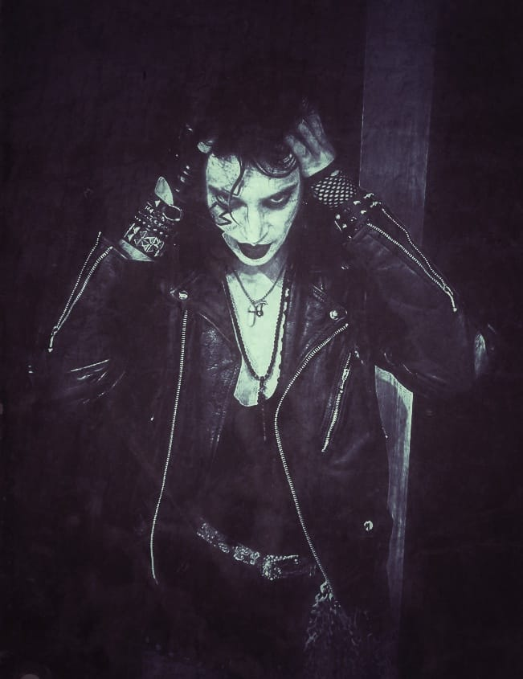
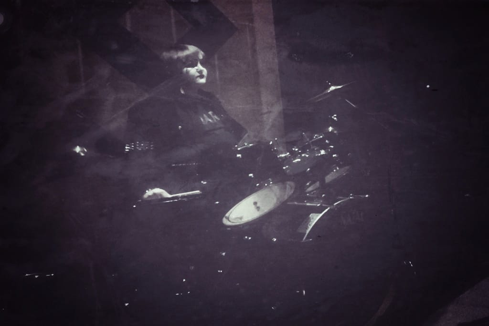
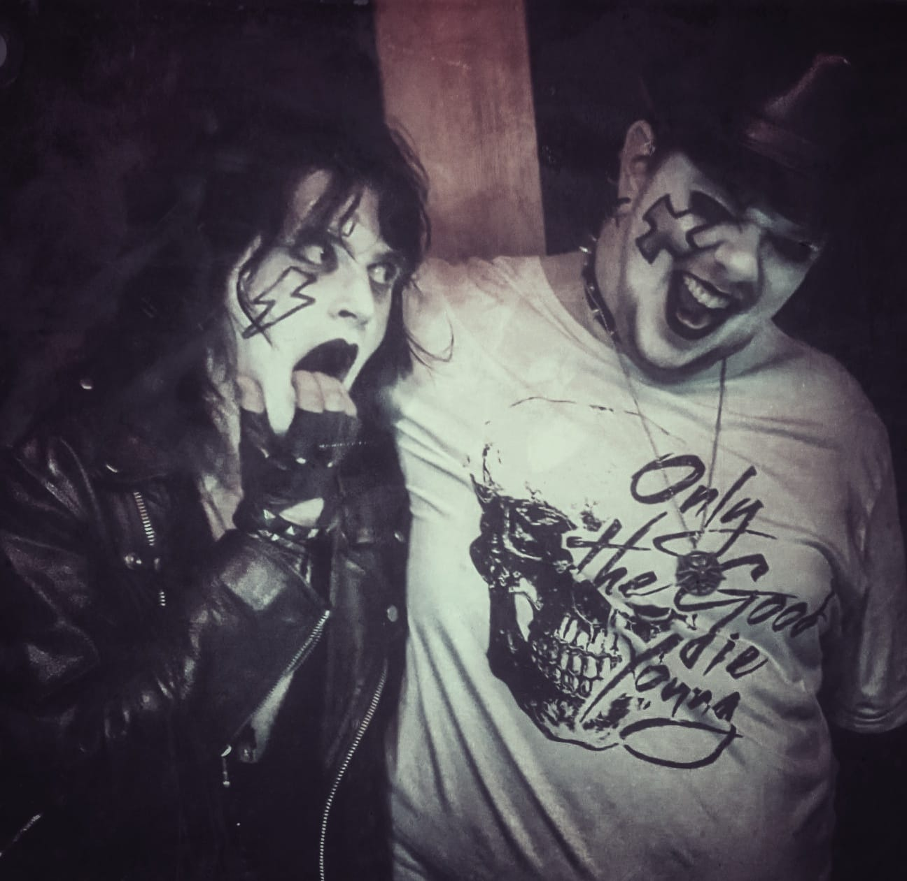

Cruel addiction is a band based in Manchester. The band was formed in November 2022 and I have joined in December - one month later. At the time, the band had only 2 members, lead guitarist and singer/rhythm guitarist. Both of them are very talented musicians. In February 2023 we have added another member - drummer. We had to part ways with the lead guitarist this April, however, this didn't stop us from progressing further.
WebsiteWe will be releasing our debut single "Hot skin" at the end of July. We have managed to line up a few gigs and have almost enough material to book recording session for the full album, which for me personally is a huge achievemnet.
We play so called "shock" rock or "glam" rock. Three of the biggest inspirations are Kiss, Motley Crue and Alice Cooper, but all of us drain our inspirations from our individual idols and bands. The list is long, as always, from Queen, Nightwish, Evergrey, Rammstein to Marilyn Manson, Cradle of Filth, Black Sabbath, Nirvana and loads more.
The idea of our music is to re-introduce the old, catchy and rhytmic rock and metal music from 70s and 80s. The modern rock leans towards alternative genre and modern metal is full of harsh vocals with heavy riffs. We felt like the gigs are either too soft or too heavy and very divided. Whereas 70s and 80s rock music got everyone to tap their foot, sing along and dance.
We hope that our music will have similar effect as it used to. We want to perform a show on the stage, entertaining enough to forget about daily problems and simultaneously move their body and enjoy the euphoria that singing triggers in our brain. The music is composed to be catchy, the melody and the vocals are meant to stuck in the audience's head and make their every day brighter. It's a cruel addiction.
